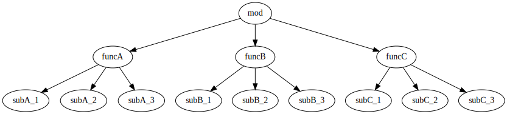

27. Lazy Loading
A project of any size will import multiple modules. And another module is imported within the imported module.
Import in scripting languages means dynamic loading. When you start a script, after all the modules used by the script have been loaded, the script's main process finally starts.
For example, if there is an import relationship as shown in the following figure, the main mod module will be processed after all related modules have been loaded.
digraph G {
rankdir = TB;
mod -> funcA
mod -> funcB
mod -> funcC
funcA -> subA_1
funcA -> subA_2
funcA -> subA_3
funcB -> subB_1
funcB -> subB_2
funcB -> subB_3
funcC -> subC_1
funcC -> subC_2
funcC -> subC_3
}
However, it doesn't always use all imported modules.
For example, consider the above diagram as a program that provides three functions (funcA, funcB, funcC).
If you choose to run one of the three of this program, the other two features that were not chosen will not be used.
import loads the module regardless of whether the module is used. In other words, the time it takes to load modules that are not actually used and the memory area that stores the loaded data is wasted.
In the above diagram, if funcA is selected, funcB, subB_1 to subB_3, func_C, subC_1 to subC_3 are wasted.
If your project is small, you probably don't need to worry about this waste. However, when the scale of the project grows, it becomes impossible to ignore this waste.
For example, even if the time required to load one module is 0.01 seconds, it will take 1 second if there are 100 modules.
If the program is resident, the loading process is only done once, so even if it takes a little time to start up, you can put up with it. increase.
Lazy loading eliminates the waste of this loading process.
lazy loading
Lazy loading is a processing method that loads modules only when they are needed, rather than loading all related modules at startup.
In the above figure, when funcA is selected, funcB, subB_1 to subB_3, func_C, subC_1 to subC_3 that are not accessed are not loaded.
This saves load processing time and memory area for storing loaded data.
How to implement lazy loading
Lazy loading determines whether or not the module has been loaded when the module is accessed, loads it if it is not loaded, and uses the loaded data if it is loaded.
On the other hand, normal loading loads all modules in a daisy chain at startup (timing of import).
In other words, in lazy loading, judgment processing is included compared to normal loading, so there is overhead for that amount. Of course the overhead is very low. However, since it is true that overhead is applied, performance degradation may occur in very critical cases.
When using lazy loading, it is necessary to consider such cases.
Effects of lazy loading
As mentioned earlier, lazy loading has a small overhead.
But it will have little effect.
What is likely to have more impact is the difference in the order of execution.
Effects of execution order due to different load methods
Anything you put in the top scope of a module will be executed when that module is loaded.
For example, if you have a module like this:
// @lnsFront: ok
print( "hoge" );
fn func() {
print( "foo" );
}
hoge is output when this module is loaded. On the other hand, func() is not executed just because it is loaded, so foo is not printed.
And if you have the following module that imports this module,
// @lnsFront: skip
import Hoge;
print( "bar" );
Hoge.func();A normal load produces the following output:
hoge
bar
fooOn the other hand, lazy loading produces the following output:
bar
hoge
fooComparing the output results, the output order of bar and hoge is reversed.
The reason why this happens is that in a normal load
- The submodule Hoge is loaded at the timing of import,
- At that timing,
print( "hoge" )is executed, print( "bar" )is executed after loading submodule Hoge.
On the other hand, in lazy loading, the submodule Hoge is not loaded at the timing of import in normal loading,
- First
print( "hoge" )is executed and - Just before executing the next
Hoge.func(), the submodule Hoge is loaded and print( "hoge" )is processed.
This is the difference between normal loading and lazy loading.
Impact of global on different load methods
LuneScript access control has global in addition to pub/pro/pri/local.
As for the details of global , refer to other articles, global is registered when the module is loaded.
In other words, the timing at which global data is registered is delayed due to the effects of lazy loading.
I think that there are few cases where global is used, but please be careful.
global is recommended only for cases that require compatibility with existing Lua code.
how to use
Lazy loading is available with the following instructions:
- import
- module
| order | load processing | |
|---|---|---|
| import | Compile option dependent | |
| import.l | lazy loading | |
| import.d | Normal load | |
| order | load processing | |
| module | Compile option dependent | |
| module.l | lazy loading | |
| module.d | Normal load |
For example, a Sub module is lazily loaded by doing:
// @lnsFront: skip
import.l Sub;import, module are compile option dependent.
If you specify the following compile options:
--default-lazy
import, module will be lazy loaded.
If import.d and module.d are specified, normal loading will be performed even when --default-lazy is specified.